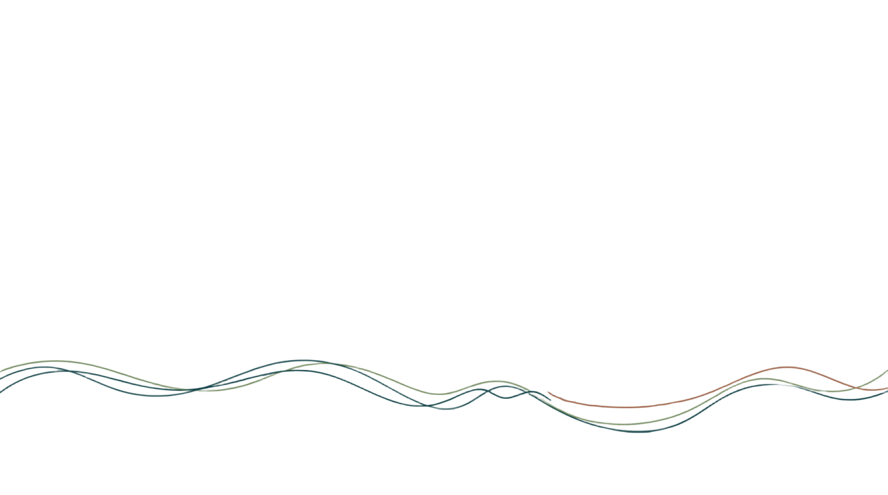

- Cartografia como instrumentos ofensivos do setor econômico sobre território de povos e comunidades tradicionais.
- Cartografia voltada para o mapeamento, reconhecimento, valorização e resistência das comunidades pesqueiras.
- Como contraponto ao apagamento gerado pelas cartografias, esta pesquisa busca apresentar subsídios técnicos para a construção das contra cartografias
- O REAT CARTO uma ferramenta de luta para reivindicações territoriais


Introdução

Objetivo Geral
Avaliar o impacto e a viabilidade do sistema de cartografia social no mapeamento participativo dos territórios tradicionais das comunidades pesqueiras no Brasil, analisando as dinâmicas territoriais reveladas no WebSIG, a apropriação do sistema por pesquisadores e comunidades, e as demandas para seu aprimoramento como ferramenta política de análise, reivindicação e fortalecimento territorial.
Justificativa
1
Cartografia do poder
Usada pelo Estado e por detentores do capital para remover pessoas de seus territórios em favor de grandes empreendimentos.
2
Não neutralidade dos mapas
A cartografia é uma poderosa ferramenta de comunicação e com ela selecionamos o que será ou não apresentado/representado
3
Apropriação (séc. XX)
Povos tradicionais passam a se apropriar da cartografia para defender e preservar territórios e recursos.
4
Dependência burocrática
Comunidades ainda dependem de agentes externos para a construção de mapas digitalizados com garantia jurídica.
5
REAT CARTO
Ampliar a escala de utilização para que mais comunidades demarquem suas terras, territórios e territorialidades.
Abordagem Metodológica
Pesquisa Participativa (Thiollent, 2011).
Pesquisa, realizada em estreita associação com a resolução de um problema coletivo, com pesquisadores e participantes envolvidos cooperativamente .
Papel do pesquisador
Facilitador técnico que atua junto à comunidade na resolução de um problema prático: a defesa e demarcação do território frente a agentes externos.
Abordagem qualitativa — coleta de dados em campo articulada ao trabalho de laboratório, tensionando a cartografia acadêmica e ocidental.
Oficinas Cartográficas
- Encontros entre pesquisadores e membros das comunidades para apresentar o REAT CARTO.
- Não se restringem a treinamento técnico: são espaços de construção conjunta.
- Participantes têm contato guiado com o sistema — inserir, manipular e visualizar dados espaciais dos territórios.
- Papel metodológico central: observar as interações iniciais dos sujeitos com a tecnologia, base para as entrevistas posteriores, além de disponibilizar a ferramenta para uso continuo.
Referencial Teórico
Cartografia e contra Cartografia
Referencial Teórico
| Contra Cartografia | Cartografia Participativa | Cartografia Social | Cartografia da Ação Social | Mapeamento Colaborativo |
|---|---|---|---|---|
| Silva et al. (2021) | Acselrad (2008) | Almeida (2004) | Silva, Schipper (2012) | Souto (2021) |
| Acselrad (2008) | Sombra (2022) | Acselrad (2013) | Silva, Ribeiro (2022) | Goodchild (2007) |
| Silva, Ribeiro (2022) | Tavares et al. (2016) | Pelegrina (2020) | Silva, Ribeiro (2021) | Ritzer (2008) |
| Rocha (2017) | Rocha (2015) | Ferreira et al. (2021) | - | Dodge, Kitchin (2013) |
| Bravo, Sluter (2018) | Araújo et al. (2017) | Santos (2016) | - | Machado, Camboim (2019) |
Cartografias
- A cartografia é uma linguagem de representação do mundo — expressão de poder e de visão de mundo.
- Quem mapeia decide o que vai ou não para o mapa final: os mapas revelam e ocultam conforme quem os produz
- O aprimoramento técnico (satélites, dados digitais) tornou a cartografia disciplina de especialistas, afastando a sociedade do processo.
- Os mapas possuem normas e convenções, mundialmente utilizadas, para existir uma leitura homogênea, independentemente da área de interesse

Contra Cartografia

Guarda-chuva metodológico
A Cartografia Participativa funciona como categoria principal; dela derivam a Cartografia Social, a Cartografia da Ação Social e o Mapeamento Colaborativo.
- A partir da década de 1990, a cartografia passa a ser vista como prática social — instrumento de representação de territórios comunitários tradicionais
- Povos indígenas, quilombolas e comunidades tradicionais se apropriam da técnica para dialogar e pressionar o Estado
- Diversas terminologias quase sinônimas surgem: mapeamento etnoambiental, comunitário participativo, cultural, etnozoneamento, cartografia social...
Cartografia Participativa
Envolve diretamente os membros da comunidade no levantamento do uso da terra
Depende, em certa medida, de agentes externos para manipular os mapas.
Funciona como uma ponte entre o saber técnico e o saber tradicional
Metodologia diversa: desenhos e croquis ao uso de SIG e imagens de satélite.
Cartografia Social
Expressa o vigor dos saberes locais, sem submissão estrita às normas da cartografia matemática.
No Brasil, ganhou força com o Projeto Nova Cartografia Social da Amazônia, liderado por Alfredo Wagner
Processo horizontal: onde o pesquisador atua como facilitador; a comunidade decide o que mapear
Croquis (desenhos à mão) para representar o território; GPS para georreferenciar.
Cartografia Da Ação Social
Desloca o olhar da "terra contínua" para o "movimento da sociedade"
Foca sujeitos que não ocupam território contínuo demarcável por polígono — comum em contextos urbanos e periféricos.
O mapa não é a prioridade, mas um acessório processual: o foco é o sentido da ação, o aprendizado coletivo e a reflexão crítica.
Funciona como exercício de denúncia, resistência e valorização imaginativa dos lugares vividos.
Mapeamento Colaborativo
Ela tem sido utilizada para mapeamento popular, como por exemplo a identificação de quedas d’água desconhecidas; para o planejamento urbano; integração dos dados do OpenStreetMap com dados institucionais etc
O advento da Web 2.0 permitiu que as pessoas comuns participassem da construção de bases cartográficas
Qualquer pessoa conectado pode atuar como voluntário, inserindo dados espaciais via smartphones e plataformas web.
Exemplos: OpenStreetMap, Google Maps, Waze
Características das Cartografias
| Abordagem | Agentes e foco | Metodologia | Finalidade |
|---|---|---|---|
| Participativa | Comunidades + técnicos externos; uso da terra | Capacitação técnica, SIG, satélite | Rigor técnico para confrontar bases oficiais |
| Social | Povos tradicionais; territórios contínuos e ancestrais | Oficinas, croquis, pesquisador-facilitador | Direitos jurídicos, denúncia, identidade |
| Ação Social | Movimentos sociais e sujeitos urbanos; redes não contínuas | Grupos focais, glossários, símbolos | Compreender a sociedade em movimento |
| Colaborativa | Cidadãos comuns; escala massiva descentralizada | Plataformas Web 2.0, dados assíncronos | VGI baseada em inteligência coletiva |
REAT CARTO
Referencial Teórico
| Reat Carto / WebSIG |
|---|
| Andrade et al. (2013) |
| Gallis et al. (2018) |
| Bolfe et al. (2008) |
| Albuquerque (2025) |
| Acselrad (2015) |
| Silva et al. (2021) |
| Ribeiro (2021) |
| Silva, Schipper (2012) |
História do Sistema
WebSIGs surgem para simplificar o acesso a dados georreferenciados via internet — resposta às limitações dos SIG's comerciais, restritos a especialistas.
Antes do REAT CARTO, dois sistemas foram desenvolvidos: mapeamento de conflitos (relatórios CPP 2016/2021) e banco de dissertações/teses sobre pesca artesanal.
Criado pelo Núcleo de Ensino, Pesquisa e Extensão (R)Existências Ambientais e Territoriais, em projeto de iniciação científica tecnológica.
Fluxograma do Sistema

Fonte: autoral (2026)
POLITICAS PUBLICAS
Referencial Teórico
| Protocolo de Consulta | PAE Pesqueiro |
|---|---|
| Comunidades Tradicionais Pesqueiras da Lagoa dos Patos (2025) | Portaria nº 1.498/2025 |
| OIT 169 (Convenção) | - |
| Decreto nº 6.040/2007 | - |
Protocolo de Consulta — Lagoa dos Patos/RS
- Instrumento político-jurídico elaborado pelas próprias comunidades para regulamentar consultas do Estado e agentes privados sobre seus territórios.
- Materializa o direito à consulta prévia, livre, informada e consentida — Convenção nº 169 da OIT e Decreto nº 6.040/2007.
Contribuição do REAT CARTO
14municípios
44comunidades mapeadas
531participantes (315 H / 216 M)
Construído entre 2023–2025, com apoio do MPP, Fóruns da Pesca Artesanal e da FURG
PAE Pesqueiro
- Projeto de Assentamento Agroextrativista — modalidade da reforma agrária para populações que vivem do extrativismo e da pesca artesanal de baixo impacto.
- Aplica-se a áreas de domínio da União (ilhas, terrenos de marinha, várzeas), regulamentado pela Portaria nº 1.498/2025.
- Exige mapas, croquis, pareceres técnicos e recadastramento das famílias, com manifestação formal de interesse coletivo.
- Articulação entre MPA, INCRA, CNPCT, Fórum Nacional da Pesca Artesanal e MPP.
Potencialidades do REAT CARTO para o PAE Pesqueiro
Colaboradores da própria comunidade mapeiam poligonais e inserem metadados sobre práticas extrativistas.
Recadastramento contínuo de famílias e reconfiguração de limites, acelerando a segurança jurídica e o acesso a créditos do PNRA.
Território e Territorialidade (Pesqueira)
Referencial Teórico
| Território | Territorialidade | Território e Territorialidade Pesqueira |
|---|---|---|
| Raffestin (1986, 1993) | Raffestin (1993) | De Paula (2022) |
| Haesbaert (2003) | Haesbaert (2003) | De Paula (2023) |
Malhas, Nós e Redes
1Nós (Nodosidades)
locais de moradia e vivência comunitária — centros de decisão e poder simétrico.
2Redes
os fluxos — caminhos fluviais, varadouros e trilhas que conectam as moradias às áreas de recurso.
3Malhas (Tessituras)
As malhas acolhem elementos que revelam a organização territorial.

A Dinâmica TDR
1. Territorialização
O estabelecimento de uma ordem espacial, controle e identidade.
2. Des-territorialização
O estabelecimento de uma ordem espacial, controle e identidade.
3. Reterritorialização
A reconstrução imediata de novas mediações espaciais e novas relações de poder em novas bases.
Território e Territorialidade Pesqueira
Territorialidade pesqueira
Práticas e fazer cotidiano pelos quais pescadores se apropriam de espaços — manifesta-se nos nós (pesqueiros, moradia, lazer, religião) e nas redes (caminhos fluviais, varadouros, trilhas).
Território pesqueiro
A malha resultante da integração de nós e redes — engloba toda a espacialidade necessária à reprodução social, cultural e econômica do grupo.
- Saber = poder simétrico e compartilhado entre os membros da comunidade (não hierárquico).
- Territorialidades sobrepostas entre comunidades geram multiterritorialidades geralmente sem conflito, mediadas pela comunicação.
Referências
Referências (1/3)
- ACSELRAD, Henri. Cartografias sociais e território. Rio de Janeiro: IPPUR/UFRJ, 2008.
- ACSELRAD, Henri. (Org.). Cartografia social, terra e território. Rio de Janeiro: IPPUR/UFRJ, 2013.
- ACSELRAD, Henri; COLI, Luis Régis. Disputas territoriais e disputas cartográficas. In: ACSELRAD, H. (Org.). Cartografias sociais e território. Rio de Janeiro: IPPUR/UFRJ, 2008.
- ALBUQUERQUE, Carlos Eduardo. REATCARTO: WebSIG para cartografia social em comunidades pesqueiras. TCC (Geografia Licenciatura) — FURG, Rio Grande, 2025.
- ALMEIDA, Alfredo Wagner Berno de. Terras Tradicionalmente Ocupadas. Revista Brasileira de Estudos Urbanos e Regionais, v. 6, n. 1, 2004.
- BARDIN, Laurence. Análise de conteúdo. São Paulo: Edições 70, 2016.
- BRAVO, J. V. M.; SLUTER, C. R. O Mapeamento Colaborativo. Revista Brasileira de Geografia Física, v. 11, n. 5, 2018.
Referências (2/3)
- DE PAULA, Cristiano Quaresma. Geografias da pesca artesanal brasileira. Porto Alegre: Compasso Lugar-Cultura, 2023.
- DE PAULA, Cristiano Quaresma; SILVA, Catia Antonia da. Cartografia (da Ação) Social como meio de luta por território. In: REGO, N.; KOZEL, S. (orgs.). Narrativas, Geografias e Cartografias. v. I. Porto Alegre: Compasso/IGEO, 2020.
- GOODCHILD, Michael F. Citizens as sensors. GeoJournal, v. 69, n. 4, 2007.
- HAESBAERT, Rogério. O mito da desterritorialização. Rio de Janeiro: Bertrand Brasil, 2003.
- MACHADO, A. A.; CAMBOIM, S. P. Mapeamento colaborativo como fonte de dados para o planejamento urbano. Urbe. Revista Brasileira de Gestão Urbana, v. 11, 2019.
- PAGANOTTO, V. D.; SIMON, A. L. H. A cartografia colaborativa como instrumento para identificação de quedas d'água em Pelotas e Arroio do Padre (RS). ENANPEGE, 14., 2021.
- RAFFESTIN, Claude. Por uma geografia do poder. Trad. Maria Cecília França. São Paulo: Ática, 1993.
Referências (3/3)
- RIBEIRO, Ana Clara Torres. Cartografia da Ação Social: região latino-americana e novo desenvolvimento urbano. CLACSO, 2009.
- RIBEIRO, L. H. L.; SILVA, C. A. Cartografia da ação social e luta pelo uso do território no Brasil. Geousp, v. 26, n. 2, 2022.
- ROCHA, Otávio G. Narrativas cartográficas contemporâneas nos enredos da colonialidade do poder. 2015.
- SILVA, Catia Antonia da; SCHIPPER, Ivy. Cartografia da ação social: reflexão e criatividade no contato da escola com a cidade. Revista Tamoios, v. 8, n. 1, 2012.
- TAVARES, G. U. et al. Mapeamento colaborativo: uma interação entre cartografia e desenvolvimento sustentável. ACTA Geográfica, Boa Vista, 2016.
- THIOLLENT, Michel. Metodologia da pesquisa-ação. 18. ed. São Paulo: Cortez, 2011.
- COMUNIDADES TRADICIONAIS PESQUEIRAS DA LAGOA DOS PATOS. Protocolo de Consulta das Comunidades Tradicionais Pesqueiras da Lagoa dos Patos/RS. Rio Grande: FURG; MPA, 2025.
- BRASIL. INCRA. Assentamento agroextrativista pesqueiro Território Doquinhas é criado em Pelotas (RS). Brasília: Incra, 2026.